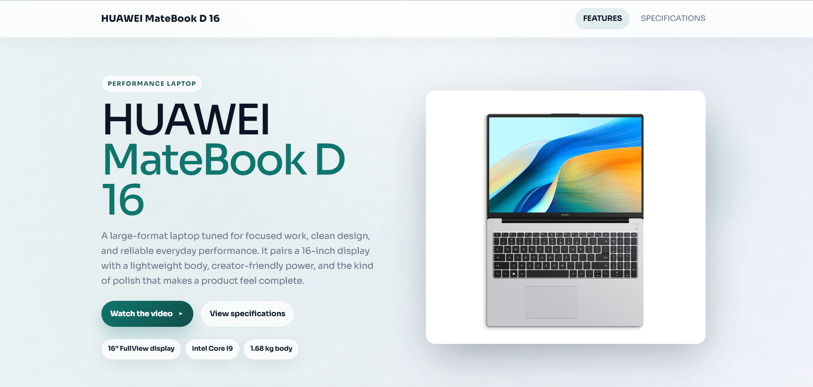
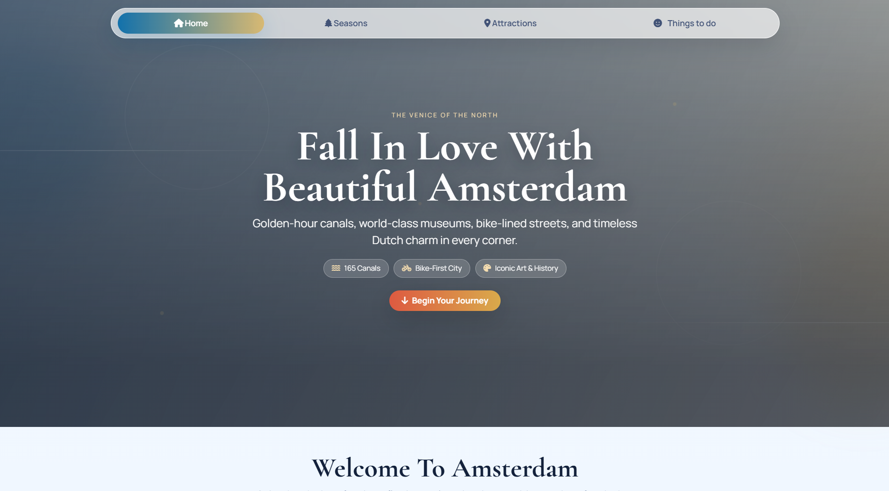

Currently focused on learning
I am Denmar Redondo, an aspiring IT professional focused on networking, cybersecurity, and practical web development.
22+
Networking Training Hours
9+
Portfolio Projects Completed
3
Core Tracks: Networking, QA, Cybersecurity
100%
Learning Commitment
Technology student at Polytechnic University of the Philippines - Sto. Tomas Campus.
My name is Redondo, Denmar C., and I am passionate about solving real-world technology problems. I continuously sharpen my skills through hands-on software and networking projects.
I value honesty, discipline, and determination. These principles help me build dependable systems while growing into a stronger IT professional.
Completed a 22-hour Networking Basics program covering IP setup, routing concepts, and troubleshooting workflows.


Building secure systems through practice, collaboration, and project-based learning.
Grow into a well-rounded IT professional who can design, secure, and maintain robust digital solutions.
Selected works that blend visual storytelling and practical implementation.

Product showcase page focused on clean sections and responsive behavior.
Open Project

Visual gallery project using image hierarchy and interaction-focused structure.
Open Project
Weather API activity with JavaScript integration and practical API handling.
Open ProjectProject outputs from key subjects and team collaborations.

Final project in Object-Oriented Programming.

Final project in IPT - FE.

Final project in Operating Systems.

Final project in Data Structures and Algorithms.

Final project in WebDev, SIA, and SAD.
Focused on growth through student collaborations and project-based learning.
Feel free to connect through my social profiles. I am currently focused on skill-building, student collaborations, and project partnerships in networking and web development.